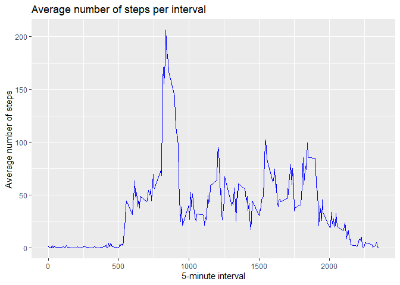

Reproducible Research - Peer-graded Assignment: Course Project 1
Read and check the data
1.Reading in the dataset
mydata<-read.csv("activity.csv")2.Checking the data
head(mydata, n=10)## steps date interval
## 1 NA 2012-10-01 0
## 2 NA 2012-10-01 5
## 3 NA 2012-10-01 10
## 4 NA 2012-10-01 15
## 5 NA 2012-10-01 20
## 6 NA 2012-10-01 25
## 7 NA 2012-10-01 30
## 8 NA 2012-10-01 35
## 9 NA 2012-10-01 40
## 10 NA 2012-10-01 45summary(mydata)## steps date interval
## Min. : 0.00 Length:17568 Min. : 0.0
## 1st Qu.: 0.00 Class :character 1st Qu.: 588.8
## Median : 0.00 Mode :character Median :1177.5
## Mean : 37.38 Mean :1177.5
## 3rd Qu.: 12.00 3rd Qu.:1766.2
## Max. :806.00 Max. :2355.0
## NA's :2304Plot the total number of steps taken each day
1.Aggregte steps by date
TotalsPerDay <- aggregate(mydata$steps, list(mydata$date), FUN=sum)
colnames(TotalsPerDay) <- c("Date", "Steps")
head(TotalsPerDay, n=10)## Date Steps
## 1 2012-10-01 NA
## 2 2012-10-02 126
## 3 2012-10-03 11352
## 4 2012-10-04 12116
## 5 2012-10-05 13294
## 6 2012-10-06 15420
## 7 2012-10-07 11015
## 8 2012-10-08 NA
## 9 2012-10-09 12811
## 10 2012-10-10 99002.Plot histogram of the total number of steps taken each day
install.packages(
"ggplot2",
repos = c("http://rstudio.org/_packages","http://cran.rstudio.com"),
dependencies=TRUE
)## package 'ggplot2' successfully unpacked and MD5 sums checked
##
## The downloaded binary packages are in
## C:\Users\x\AppData\Local\Temp\RtmpUTifqt\downloaded_packageslibrary(ggplot2)
g <- ggplot(TotalsPerDay, aes(Steps))
g <- g + geom_histogram(boundary=0, binwidth=1000,col="black", fill="lightblue") +
ggtitle("Total steps per day") + xlab("Steps") + ylab("Frequency")
print(g)
Mean and median number of steps taken each day
1.Calculate and report the mean
as.integer(mean(TotalsPerDay$Steps, na.rm=TRUE))## [1] 107662.Calculate and report the median
as.integer(median(TotalsPerDay$Steps, na.rm=TRUE))## [1] 10765Time series plot of the average number of steps taken
1.Time series plot of the 5-minute interval (x-axis) and the average number of steps taken, averaged across all days (y-axis)
StepsByInterval <- aggregate(steps~interval,data=mydata,FUN=mean,na.action=na.omit)
head(StepsByInterval)## interval steps
## 1 0 1.7169811
## 2 5 0.3396226
## 3 10 0.1320755
## 4 15 0.1509434
## 5 20 0.0754717
## 6 25 2.0943396g <- ggplot(StepsByInterval, aes(interval, steps))
g <- g + geom_line(col="blue") + ggtitle("Average number of steps per interval")+
xlab("5-minute interval") + ylab("Average number of steps")
print(g)
2.The 5-minute interval, on average across all the days,that contains the maximum number of steps
StepsByInterval <- aggregate(steps~interval,data=mydata,FUN=mean,na.action=na.omit)
head(StepsByInterval)## interval steps
## 1 0 1.7169811
## 2 5 0.3396226
## 3 10 0.1320755
## 4 15 0.1509434
## 5 20 0.0754717
## 6 25 2.0943396StepsByInterval[which.max(StepsByInterval$steps), ]$interval## [1] 835Imputing missing data
1.Calculate and report the number of missing values
sum(is.na(mydata))## [1] 23042.Filling the missing (NA) values with mean values for intervals
ImputtedData <- mydata
na <- is.na(ImputtedData$steps)
mydata_nona <- subset(mydata, !is.na(mydata$steps))
meanval <- tapply(mydata_nona$steps, mydata_nona$interval, mean, na.rm=TRUE, simplify=T)
ImputtedData$steps[na] <- meanval[as.character(ImputtedData$interval[na])]3.Check the new dataset
head(ImputtedData)## steps date interval
## 1 1.7169811 2012-10-01 0
## 2 0.3396226 2012-10-01 5
## 3 0.1320755 2012-10-01 10
## 4 0.1509434 2012-10-01 15
## 5 0.0754717 2012-10-01 20
## 6 2.0943396 2012-10-01 25sum(is.na(ImputtedData))## [1] 04.Plot histogram of the total number of steps taken each day, calculate and report the mean and median
4.1.Aggregte steps by date
TotalsPerDay_I <- aggregate(ImputtedData$steps, list(ImputtedData$date), FUN=sum)
colnames(TotalsPerDay_I) <- c("Date", "Steps")
head(TotalsPerDay_I, n=20)## Date Steps
## 1 2012-10-01 10766.19
## 2 2012-10-02 126.00
## 3 2012-10-03 11352.00
## 4 2012-10-04 12116.00
## 5 2012-10-05 13294.00
## 6 2012-10-06 15420.00
## 7 2012-10-07 11015.00
## 8 2012-10-08 10766.19
## 9 2012-10-09 12811.00
## 10 2012-10-10 9900.00
## 11 2012-10-11 10304.00
## 12 2012-10-12 17382.00
## 13 2012-10-13 12426.00
## 14 2012-10-14 15098.00
## 15 2012-10-15 10139.00
## 16 2012-10-16 15084.00
## 17 2012-10-17 13452.00
## 18 2012-10-18 10056.00
## 19 2012-10-19 11829.00
## 20 2012-10-20 10395.004.2.Plot histogram of the total number of steps taken each day
library(ggplot2)
g <- ggplot(TotalsPerDay_I, aes(Steps))
g <- g + geom_histogram(boundary=0, binwidth=1000,col="black", fill="lightblue") +
ggtitle("Total steps per day") + xlab("Steps") + ylab("Frequency")
print(g) 4.3.Calculate and report the mean
4.3.Calculate and report the mean
as.integer(mean(TotalsPerDay_I$Steps, na.rm=TRUE))## [1] 107664.4.Calculate and report the median
as.integer(median(TotalsPerDay_I$Steps, na.rm=TRUE))## [1] 10766Imputing the data resulted in a more normal distribution. As missing data was replaced with the mean values, the median moved and become equal to the mean.
Differences in activity patterns between weekdays and weekends
1.Create a new factor variable in the dataset with two levels - “weekday” and “weekend”
ImputtedData$date <- as.Date(strptime(ImputtedData$date, format="%Y-%m-%d"))
ImputtedData$daytype <- sapply(ImputtedData$date, function(x) {
if (weekdays(x) == "Saturday" | weekdays(x) =="Sunday")
{y <- "Weekend"} else
{y <- "Weekday"}
y
})
head(ImputtedData) ## steps date interval daytype
## 1 1.7169811 2012-10-01 0 Weekday
## 2 0.3396226 2012-10-01 5 Weekday
## 3 0.1320755 2012-10-01 10 Weekday
## 4 0.1509434 2012-10-01 15 Weekday
## 5 0.0754717 2012-10-01 20 Weekday
## 6 2.0943396 2012-10-01 25 Weekday2.Make a panel plot containing of the 5-minute interval (x-axis) and the average number of steps taken, averaged across all weekday days or weekend days (y-axis)
plotdata <- aggregate(steps~interval + daytype, ImputtedData, mean, na.rm = TRUE)
g<- ggplot(plotdata, aes(x = interval , y = steps, color = daytype)) +
geom_line() +
labs(title = "Average Number of steps taken by day type (weekday/weekend)", x = "Interval", y = "Number of steps") +
facet_wrap(~daytype, ncol = 1, nrow=2)
print(g)